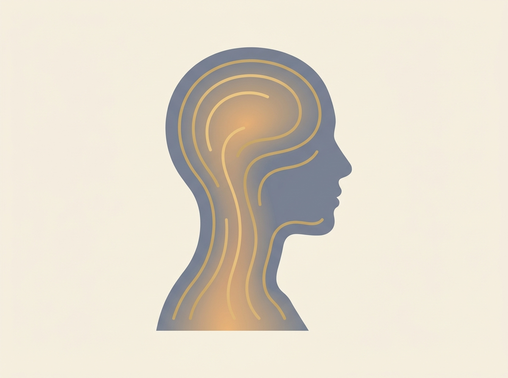
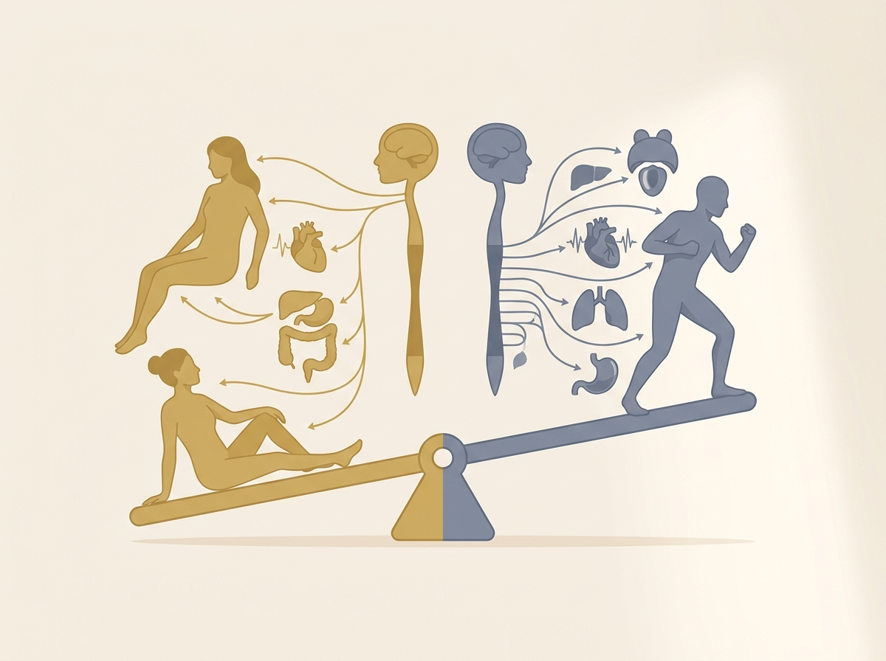
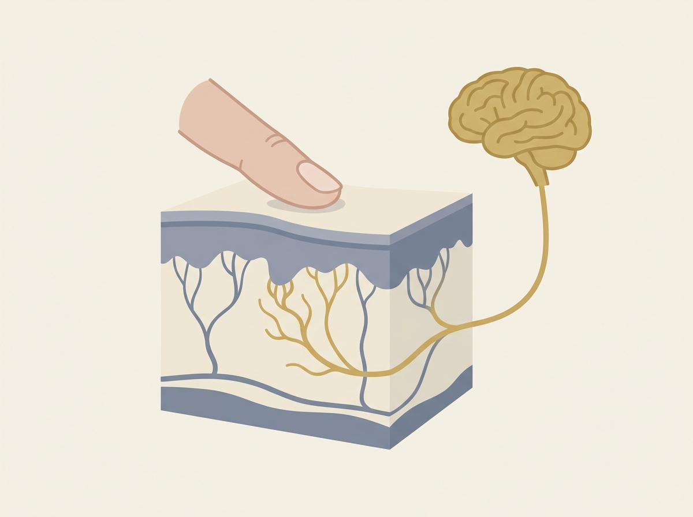

| 🤲 手でやること（実演・撮る絵） | 🗣 口で読むこと（プロンプター） |
|---|---|
|
・モデルの頭に手を置いて、動かさない（静止タッチ・①用） ・側頭部をゆっくり触る（低速タッチ・②用） ・側頭部を中くらいの圧で押す（指が沈むが、相手が顔をしかめない深さ・③用） ・額→頭頂→後頭を、1秒で3〜5cm撫でる（低速軽擦・タイマー焼き込み・⑤用） |
・S01-S02 冒頭挨拶＋ゴール宣言（座り・カメラ目線） ・S03 ②の頭で一言（手を止めて言う） ・S04 ⑤の頭で一言（ゆっくり読む） ・S05 ⑥の頭で一言 ・S06 説明台本パート導入 ・S07 まとめ（手を止めて言う）／S08 宿題（ED） ※台本①〜③（お客様説明）はナレーター読み上げ。太郎さんは読まない |
img/ 直下に配置（onload で自動的に「生成待ち」表示から差し替わる）。| 種類 | ファイル名（img/直下） | 作るもの | 使う場面（TC） |
|---|---|---|---|
| AI生成解剖図 | PG21_01_autonomic_balance.png | 自律神経バランスの概念図。左＝交感神経（緊張）／右＝副交感神経（リラックス）のシーソー。副交感側をゴールド、交感側をグレーで色分け | 04:30 ②交感・副交感 |
| AI生成解剖図 | PG21_02_head_neck_circulation.png | 頭〜首の血のめぐりのイメージ図。頭部から首すじにかけて、めぐりが穏やかに広がる様子。めぐりをゴールド、頭部・首の輪郭をグレーで | 01:00 ①脳疲労（頭〜首の巡り） |
| AI生成解剖図 | PG21_03_c_tactile_fibers.png | ゆっくり触れると心地よい神経（C触覚線維）の概念図。皮膚から脳へ心地よさの信号が届くイメージ。C触覚線維をゴールド、その他の触覚神経をグレーで | 15:30 ⑤C触覚線維 |
| アニメ図（別途） | — | 心拍波形が「一定」→「間隔がゆらぐ」に変わる図。施術後にHRVが上がる矢印 | 08:30 ③HRV |
| アニメ図（別途） | — | コルチゾールの高止まり曲線＋時間バー「15〜25分」を重ね、緩やかに下がる点線（「示唆」注記つき） | 12:00 ④ホルモン |
| アニメ図（別途） | — | 速さ・圧・時間・リズムの4本が1本の太い矢印「アクセル→ブレーキ」に合流するフロー図（速さ＝C線維／圧＝HRV／時間＝ホルモン／リズム＝鎮静の対応表示） | 19:30 ⑥統合 |
| 大テロップ | — | 各パート冒頭のキーワード提示6枚（脳疲労／アクセル・ブレーキ／HRV／コルチゾール＋15〜25分／C触覚線維3〜5cm/秒／なぜ心地よいのか） | 各パート冒頭 |
| 図解 | — | 脳疲労チェックリスト7項目（配布物と同一デザイン）＋末尾に「医学的診断ではありません」注記 | 22:30 ⑦チェック |
| 実演インサート | — | タイマー焼き込みの低速軽擦カット（3〜5cm/秒・手元寄り）。「遅さ」を実時間で見せる | 15:30 ⑤内 |
| 字幕 | — | お客様説明台本3本の話し言葉字幕（大きめ）。「〜と言われています」「〜を目的に」に下線 | 26:00 説明台本 |
| 比較テロップ | — | 薬機法OK／NG対訳表10対（NG＝赤の取り消し線／OK＝緑）。1対ずつ→最後に一覧1枚 | 30:30 対訳表 |
| まとめテロップ | — | 中央大「今日の1つ ＝ ゆっくり触る理由を、ひとこと添える」 | 32:00 まとめ |
| 番号 | PG21 |
|---|---|
| タイトル | なぜ心地よいのか（脳疲労・自律神経）＋お客様への説明台本 |
| 尺 | 約33分（OP30秒＋宿題復習30秒＋本編⑦まで約25分＋説明台本30秒×3本＋対訳表約1.5分＋まとめ・宿題・ED） |
| 収録形態 | 触診ナレ型。太郎さんはOP/ED＋本編の一言インサート（S03〜S06）を別撮り。本編はモデルへの触診デモ（層1＝太郎の手）にナレーション（層2）＋図解アニメーション（層3）を重ねる。説明台本パートはナレーター読み上げ＋字幕 |
| 必要機材 | 太郎さんOP/ED収録：正面カメラ1台＋ピンマイク（背景＝施術空間、ダークネイビー／ゴールド）／本編触診デモ：俯瞰A・サイド B・手元寄りC の3カメ、ベッドまたはチェア／ナレーション収録ブース（クリアな中低音）／図解アニメーション制作（脳・自律神経の配線図／アクセル・ブレーキ／HRV波形／コルチゾール曲線／皮膚断面とC触覚線維／30分タイムライン）／速度バー・時間バーのモーショングラフィック |
| モデル | 施術を受ける役 1名（頭部の触診デモ用・ベッド仰臥位）。太郎さんはOP/EDのみ本人カメラ目線 |
| 参照PG | PG09 太郎ハンド3種／PG11 筋膜リリース頭皮さすり＆揉捏／PG13 首肩コリのリリース／PG18・PG19 30分コース通し実演（触診デモの手順ベース）／次回接続：PG22（エビデンス回）・PG23 |
| コンプラ | 効果の断定なし。「リラクゼーションを目的に」「〜と言われています」「研究で示唆されています」で統一。治る／改善／自律神経が整う／育毛 はNG。数字・実績は捏造せず、不明箇所は〔要確認〕を明記。監修クレジット〔要確認: 監修者表記（旧版は川上監修）〕 |
| 時間 | パート | 内容 | 層 |
|---|---|---|---|
| 00:00–00:15 | OP挨拶 | 太郎さん挨拶・カメラ目線（S01） | 🎬 層1 |
| 00:15–00:30 | 今日のゴール宣言 | 太郎さんがゴールを言う（S02）／OPテロップ | 🎬 層1 📺 層3 |
| 00:30–01:00 | 先週の宿題・良い例紹介 | ナレーションで前回の宿題を振り返り、良い実践例を紹介 | 🎙 層2 |
| 01:00–04:30 | ① 脳疲労とは何か | 「脳疲労」を平易に定義。自律神経の登場。頭〜首のめぐり図（PG21_02）を出し、ナレが図を指す → 太郎の手が同じ後頭部・側頭部に静止タッチ | 🎙 層2 📺 層3 🎬 層1 |
| 04:30–08:30 | ② 交感神経と副交感神経 | 自律神経バランス図（PG21_01・アクセル／ブレーキ）を出し、ナレが図を指す → 太郎の手が低速のやさしいタッチ。切り替えの話 | 🎙 層2 📺 層3 🎬 層1 |
| 08:30–12:00 | ③ HRV（心拍のゆらぎ） | HRVとは何か。中程度の圧との関連 | 🎙 層2 📺 層3 🎬 層1 |
| 12:00–15:30 | ④ ストレスホルモンと時間 | コルチゾールと頭皮マッサージ15〜25分の示唆。30分コースとの重なり | 🎙 層2 📺 層3 🎬 層1 |
| 15:30–19:30 | ⑤ C触覚線維（速さ） | C触覚線維の図（PG21_03）と「3〜5cm/秒」を出し、ナレが図を指す → 太郎の手が額→頭頂→後頭を同じ速さで低速軽擦（S04） | 🎬 層1 🎙 層2 📺 層3 |
| 19:30–22:30 | ⑥ なぜ心地よいのか（統合） | 速さ・圧・時間・リズムを1本の流れに統合（S05） | 🎬 層1 🎙 層2 📺 層3 |
| 22:30–25:30 | ⑦ 脳疲労チェックリスト | 日常の脳疲労サイン7項目をテロップ提示 | 🎙 層2 📺 層3 |
| 25:30–26:00 | 説明台本パート導入 | 太郎さん一言「言葉も、技術です。」（S06） | 🎬 層1 📺 層3 |
| 26:00–30:30 | ★お客様への説明台本 30秒×3本 | 施術前／施術中／施術後の読み上げ用台本を実演字幕化 | 🎙 層2 📺 層3 |
| 30:30–32:00 | ★薬機法 OK/NG言い換え対訳表 | 10対の言い換えをテロップで提示 | 🎙 層2 📺 層3 |
| 32:00–32:30 | 今日から現場で使える1つ | まとめテロップ＋太郎さん一言（S07） | 🎬 層1 📺 層3 |
| 32:30–33:00 | 宿題提示＋締め | 太郎さん宿題（S08）＋テロップ「それでは、また来週。」 | 🎬 層1 📺 層3 |
| 33:00–33:20 | クロージング | ロゴ・次回予告（PG22）テロップ | 📺 層3 |
先週の宿題は、覚えていますか。〔要確認: 前回PGの宿題内容に合わせて1文を差し替え〕。実際にやってみた、という報告をいくつもいただきました。中でも、いちばん多かったのは、「急がないだけで、相手の力の抜け方が変わった」という声です。手を速く動かす代わりに、少しゆっくりにしてみる。たったそれだけで、施術の入り方が変わる。今日は、その「ゆっくりが効く理由」を、体の仕組みから学びます。
今日のテーマは、「脳疲労」と「自律神経」です。手技は出てきません。けれど、これは、このスクールでいちばん大切な回のひとつです。なぜなら、理由がわかると、同じ手技でも、触れ方が変わるからです。
まず、「脳疲労」という言葉から始めます。これは、医学の正式な病名ではありません。私たちが、ふだんの暮らしで感じている、あの感覚を指す言葉です。体は動くのに、頭が重い。集中が続かない。寝ても、すっきりしない。寝つけない。これらをまとめて、ここでは「脳疲労」と呼びます。
体の疲れと、脳の疲れは、少し違います。体の疲れは、休めば回復しやすい。けれど、脳の疲れは、横になっても、頭の中が動き続けて、休まらないことがあります。考えごと、スマートフォン、絶え間ない情報。脳は、起きているあいだ、ほとんど休んでいません。
では、この「脳の休まらなさ」の中心に、何があるのか。それが、今日の主役、「自律神経」です。自律神経とは、自分の意思とは関係なく、体を自動で調整している神経のことです。心臓を動かす。汗をかく。胃腸を動かす。呼吸を整える。あなたが意識しなくても、二十四時間、休まずに働いています。
この自律神経が、ずっと緊張したまま、切り替わりにくくなる。これが、脳疲労の感覚に深く関わっていると考えられています。では、その「緊張」と「切り替え」とは、どういうことか。次のパートで、二つの神経に分けて見ていきます。

（図で頭〜首のめぐりを見せる → 太郎さんの手で、モデルの後頭部と側頭部の同じ場所に手を置いたまま、動かさない静止タッチを見せる。ナレーションはその上に重なる。）
自律神経は、大きく二つに分かれます。「交感神経」と、「副交感神経」です。名前は難しいですが、働きは、とてもシンプルです。
交感神経は、体を、活動モードにする神経です。車でいえば、アクセルです。仕事に集中するとき、緊張するとき、危険を感じたとき。交感神経が働くと、心臓は速く打ち、血圧は上がり、筋肉に力が入ります。体は、いつでも動ける状態になります。
もう一方の、副交感神経は、体を、休息モードにする神経です。こちらは、ブレーキです。くつろいでいるとき、眠るとき、食事のあと。副交感神経が働くと、心臓はゆっくりになり、筋肉はゆるみ、消化が進みます。体は、回復するほうへ向かいます。
心地よい状態とは、この二つが、状況に合わせて、なめらかに切り替わっていることだと言われています。昼はアクセル、夜はブレーキ。緊張するときはアクセル、くつろぐときはブレーキ。この切り替えが、うまくいっている状態です。
ところが、現代の暮らしでは、アクセルが、踏みっぱなしになりやすい。仕事のプレッシャー、人間関係、スマートフォンの通知。交感神経が、ずっと優位なまま、ブレーキに切り替わりにくい。すると、体は休んでいるつもりでも、内側は緊張したまま。これが、寝てもすっきりしない、頭が休まらない、という感覚につながると考えられています。
そして、ここが大切です。私たちが、ヘッドマッサージで行っているのは、この「ブレーキを、押す手伝い」です。緊張したアクセルから、休息のブレーキへ。その切り替えのきっかけを、手で作っている。これが、リラクゼーションを目的とした施術の、いちばん深いところです。

（図を出す → 太郎さんの手で同じ「低速のやさしいタッチ」を見せる。層3：左にアクセル＝交感、右にブレーキ＝副交感の対比アニメ。）
では、心と体が休息のほうへ傾いているかどうかを、どうやって知るのか。それを示す、ひとつの指標を紹介します。「HRV」です。日本語では、「心拍のゆらぎ」と訳されます。
心臓は、一定のリズムで打っている、と思われがちです。けれど、本当は、一拍ごとに、ほんのわずかに、間隔が違っています。少し速かったり、少し遅かったり。この、拍と拍のあいだの、わずかなゆらぎ。それがHRVです。
意外に思うかもしれません。このゆらぎは、多いほうが、余裕のある状態だと言われています。心拍の間隔が、しなやかに変化できる。それは、アクセルとブレーキ、二つの神経が、どちらもよく働き、状況に応じて切り替えられているサインだと考えられているからです。
逆に、ゆらぎが少なく、機械のように一定になっているときは、交感神経が優位で、緊張が続いているサインのひとつ、と考えられています。アクセルを踏みっぱなしだと、心臓も、余裕なく、一定に打ち続ける。HRVは、その「余裕」を映す鏡のようなものです。
そして、複数のマッサージ研究では、中くらいの強さの圧で触れることが、心拍や血圧の低下、そしてHRVの上昇と関連している、と示唆されています。つまり、適切な圧のマッサージのあと、体が、休息のほうへ傾き、心拍に「ゆらぎ」という余裕が戻ってくる傾向が見られる、ということです。
ここで、思い出してください。PG11やPG18で、「圧は、中くらい」と繰り返しました。強すぎず、弱すぎず。その理由が、ここにあります。強すぎる圧は、かえって体を緊張させ、アクセルを踏ませてしまう。中くらいの圧こそが、ブレーキと、HRVの余裕に、関連すると考えられているのです。
（層1・触診デモ：側頭部への中程度の圧。指が沈むが、相手が顔をしかめない深さ。層3：一定波形→ゆらぎのある波形へ変化するアニメ。）
次に、目に見える「物質」の話をします。「ストレスホルモン」です。代表的なものに、「コルチゾール」という物質があります。
コルチゾールは、体がストレスを感じたときに出るホルモンです。それ自体は、悪者ではありません。朝、体を目覚めさせたり、ピンチのときに体を守ったりする、必要なものです。問題は、ストレスが長く続いて、このコルチゾールが、高いまま下がりにくくなることです。
コルチゾールが高い状態が続くと、寝つきや、気分、回復のしにくさと関連すると言われています。さきほどの「アクセル踏みっぱなし」の、化学的な側面、と考えると分かりやすいかもしれません。
ここで、注目すべき報告があります。頭皮へのマッサージを、およそ十五分から二十五分続けることが、このストレスに関わるホルモンの低下を示唆する、という研究報告です。あくまで、「示唆する」という段階の話です。すべての人に、必ず効く、という意味ではありません。けれど、これは、私たちの仕事にとって、とても心強い報告です。
なぜなら、思い出してください。PG18とPG19で組み立てた、あの「30分コース」。あの流れの中で、実際に手を動かしている時間は、ちょうど、この十五分から二十五分におさまる設計になっています。偶然ではありません。研究で示唆されている時間と、心地よい施術の時間が、自然と重なっている。だから私たちは、「リラクゼーションを目的に、この時間をかける」と、自信を持って言えるのです。
短すぎる施術では、もったいない。長すぎても、相手が疲れる。十五分から二十五分という時間そのものが、ひとつの技術だと考えてください。
（層3：コルチゾールの高止まり曲線＋時間バー「15〜25分」を重ね、緩やかな低下傾向を点線で。「示唆」注記を必ず添える。）
ここまでは、圧と、時間の話でした。最後に、「速さ」の話をします。これが、今日いちばん、面白い話かもしれません。「C触覚線維」という、神経のお話です。
私たちの皮膚には、触れられたことを脳に伝える、たくさんの神経があります。その中に、「C触覚線維」と呼ばれる、特別な一群があります。この神経は、何のためにあるか。痛みでも、危険を知らせるためでもありません。「心地よさ」を伝えるための神経だと考えられています。言わば、「気持ちいい、専用」の神経です。
そして、この神経には、面白い性質があります。どんな触れ方でも反応するわけではないのです。いちばんよく反応するのは、ゆっくりとした、優しい撫で。具体的には、一秒あたり、およそ三センチから五センチ。この、ゆっくりした速さの撫でが、心地よさと関連している、と触覚の神経科学で示唆されています。
速く撫でても、強く押しても、この神経は、あまり働きません。「ゆっくり、優しく」。この速さのときだけ、心地よさの神経が、よく反応する。これが、研究で示唆されていることです。
ここで、また思い出してください。PG09の太郎ハンド。PG11のさすり。そして、30分コースの「低速軽擦」。私たちは、ずっと、「一秒で三センチから五センチ」「急がない」と言い続けてきました。その理由が、ここにあります。あの遅さは、なんとなく、ではありません。心地よさの神経が、いちばんよく反応する速さを、狙っているのです。
そして、興味深いのは、C触覚線維からの信号が伝わる先です。それは、痛みや圧を判断する場所だけでなく、感情や、心地よさに関わる、脳の場所にも届くと考えられています。だから、ゆっくり撫でられると、頭で「気持ちいい」と考える前に、体と心が、先に、ゆるんでいく。理屈ではなく、心地よさが、生まれていく。これが、ゆっくり撫でることの、本当の意味です。

（図でC触覚線維と「3〜5cm/秒」を見せる → 太郎さんの手で、額から頭頂、後頭へと同じ速さの低速軽擦を実演。手元寄りC＋タイマー焼き込み。層3：速度バー「3〜5cm/秒」が反応最大ゾーンで光る。）
ここまで、四つの言葉を学びました。交感神経と副交感神経。HRV。ストレスホルモン。そして、C触覚線維。ここで、これらを、ひとつの流れに、つなげます。これが、今日の結論です。
ヘッドマッサージが始まります。まず、ゆっくり、優しく撫でる。一秒で三センチから五センチ。すると、心地よさの神経、C触覚線維が反応します。その信号が、心地よさに関わる脳の場所に届きます。
その信号は、アクセルである交感神経をゆるめ、ブレーキである副交感神経を、後押しすると考えられています。中くらいの圧と、一定のリズムも、この後押しを助けると言われています。すると、心拍はゆっくりになり、HRVに、余裕のゆらぎが戻ってくる傾向が見られます。
さらに、十五分から二十五分という時間をかけることで、ストレスに関わるホルモンも、下がっていくことが示唆されています。一定のリズムの反復刺激は、鎮静や眠気と関連すると考えられています。ゆっくりした呼吸との同期は、リラックスに関わる神経の働きと関連すると言われています。
これらが、すべて、同じ方向を向いています。アクセルから、ブレーキへ。緊張から、休息へ。だから、お客様は、施術の途中で、眠くなる。眠くなるのは、退屈だからではありません。体が、休息のほうへ切り替わった、ひとつのサインです。「気持ちよくて、寝てしまった」。それは、私たちにとって、最高の褒め言葉なのです。
ばらばらの手技ではありません。すべての手技が、「心地よさへ導く」という、ひとつの目的でつながっています。速さは、C触覚線維のため。圧は、HRVのため。時間は、ホルモンのため。リズムは、鎮静のため。理由を知って触れる手は、なんとなく触れる手とは、まったく違うものになります。
（層3：⑤までの5要素が1本の太い矢印「アクセル→ブレーキ」に合流するフロー図。速さ＝C線維／圧＝HRV／時間＝ホルモン／リズム＝鎮静 の対応を明示。）
最後に、これを、あなた自身と、お客様のために、使える形にします。「日常の脳疲労チェックリスト」です。画面に出る七つの項目を、一緒に見ていきましょう。当てはまるものを、心の中で数えてください。
一つ目。朝、目が覚めても、疲れが残っている。
二つ目。日中、ぼんやりして、集中が続かない。
三つ目。考えごとが止まらず、頭が休まらない。
四つ目。寝つきが悪い、または、夜中に目が覚める。
五つ目。肩や首、こめかみ、あごの周りが、いつも張っている。
六つ目。ちょっとしたことで、いらいらしたり、不安になったりする。
七つ目。休みの日に休んでも、すっきりしない。
いくつ、当てはまったでしょうか。これらは、病気の診断ではありません。けれど、多く当てはまるほど、アクセルが踏みっぱなしになっている、ひとつのサインかもしれない、と考えてみてください。
そして、五つ目を、もう一度見てください。「こめかみ、あご、首の張り」。側頭筋、咬筋、後頭下筋群。これは、緊張がたまりやすい場所として知られています。私たちが、30分コースで、ていねいにアプローチしてきた、まさにその場所です。
このチェックリストは、お客様との会話の入り口に使えます。「最近、こんなことはありませんか」。そう伝えることで、お客様は、自分の状態に気づき、施術の意味を、より深く受け取ってくれます。リストの配布物は、配信ページからダウンロードできるようにします。
理論は、ここまでです。ここからは、学んだことを、お客様にどう伝えるか。専門用語のまま話す必要はありません。むしろ、難しい言葉を、やさしく言い換えることが、信頼につながります。三つの場面で、そのまま声に出せる説明台本を、読み上げます。それぞれ、断定はしていません。「〜と言われています」「〜を目的に」という言い方に、注目してください。
台本① 施術前の声かけ（約30秒）
「今日は、頭をゆっくり、優しく触れていきますね。頭皮には、ゆっくり撫でられると心地よさを感じる神経があると言われています。だから、私はわざと、ゆっくり動かします。急いでいるわけではないので、安心して、力を抜いてくださいね。途中で眠くなったら、しっかり休めているサインなので、そのまま眠ってしまって大丈夫ですよ。」
ポイント：①「ゆっくり触る理由」を先に伝える。②「眠っていい」と許可を出す。③「神経があると言われています」と断定を避ける。
台本② 施術中のひとこと（約30秒）
「このあたり、こめかみや、あご、首の付け根は、知らないうちに力が入って、こわばりやすい場所だと言われています。一日のうち、ここをゆるめる時間って、なかなかないですよね。今は、活動モードから、お休みモードへ、ゆっくり切り替わっていくお手伝いをしています。呼吸も、だんだん深くなってきているかもしれませんね。」
ポイント：①「自分ごと」に感じられる具体的な部位を挙げる。②「アクセル／ブレーキ」を「活動モード／お休みモード」に言い換える。
台本③ 施術後のクロージング（約30秒）
「お疲れさまでした。よく休めていらっしゃいましたね。十五分から二十五分くらい、ゆっくり頭をほぐす時間は、リラックスにつながると言われています。今日みたいに、頭が張ってきたなと感じたら、ためこむ前に、また休みにいらしてください。続けることが、いちばんのリラクゼーションになりますから。」
ポイント：①価値を「〜と言われています」で止め、断定しない。②「また来てください」という次回への自然な入り口を作る。
PG21｜なぜ心地よいのか（脳疲労・自律神経）理由がわかると、触れ方が変わる。理論回・手技解説なし ／ 監修：〔要確認〕脳疲労 ＝ 頭が休まらない状態（正式な病名ではありません）交感神経＝アクセル ／ 副交感神経＝ブレーキHRV ＝ 心拍のゆらぎ（多いほど「余裕」の指標）ストレスホルモン（コルチゾール）＋ 15〜25分C触覚線維 ＝ 「心地よさ」専用の神経（3〜5cm/秒）なぜ心地よいのか ＝ 速さ・圧・時間・リズムが同じ方向を向く15〜25分を重ね、緩やかな低下傾向（点線・「示唆」注記）。3〜5cm/秒が「ちょうどいい」ゾーンで反応最大。信号が脳の感情・心地よさ領域へ届く矢印。中程度の圧 ＝ 心拍・血圧の低下、HRV上昇と関連、と示唆頭皮マッサージ 15〜25分 ＝ ストレスホルモン低下を示唆する報告もゆっくりの撫で（約3〜5cm/秒）＝ 心地よさに関わる神経の働きと関連、と示唆一定リズムの反復＝鎮静・眠気と関連／ゆっくりの呼吸（約6回/分）＝リラックスに関わる神経と関連、と示唆側頭筋・咬筋・後頭下筋群＝緊張が集まりやすい部位、と報告※医学的診断ではありません。多く当てはまるほど「アクセル優位」のサインかもしれません断定しない言い回しに下線（例：〜と言われています／〜を目的に）。ポイント部分を色変え＋囲み。効果は約束しない。目的と傾向で語る。今日の1つ ＝ ゆっくり触る理由を、ひとこと添える本コンテンツはリラクゼーションを目的とした手技と理論の紹介です。治療・効能を保証するものではありません。配布物パック_v6.md に収録。